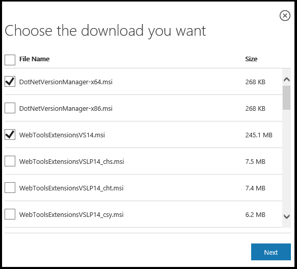

Installing ASP.NET 5 On Windows¶
By Steve Smith, Daniel Roth, Rick Anderson
Install ASP.NET with Visual Studio¶
The easiest way to get started building applications with ASP.NET 5 is to install the latest version of Visual Studio 2015 (including the free Community edition).
- Install Visual Studio 2015
Be sure to specify that you want to include the Microsoft Web Developer Tools.
- Install the latest ASP.NET 5 preview (Beta8).
Select the appropriate version of the .NET Version Manager (x64 or x86) and the web tools extensions for Visual Studio. The installer will tell you if you’ve selected the wrong version of the .NET Version Manager.

Enable ASP.NET 5 command-line tools. Open a Developer Command Prompt for VS2015 and run the following commands:
dnvm setup dnvm upgrade
This will set up the .NET Version Manager (DNVM) on the path and install the latest .NET Execution Environment (DNX).
You are all set up to go.
Install ASP.NET Standalone¶
Visual Studio isn’t the only way to install ASP.NET, and installing an IDE may not be appropriate in some scenarios. You can also install ASP.NET on its own from a command prompt. There are a few steps involved, since we’ll need to install and configure the environment in which ASP.NET runs, known as the .NET Execution Environment (DNX). To install DNX, we need one more tool, the .NET Version Manager (DNVM).
Install the .NET Version Manager (DNVM)¶
Use .NET Version Manager to install different versions of the .NET Execution Environment (DNX).
To install DNVM open a command prompt and run the following:
@powershell -NoProfile -ExecutionPolicy unrestricted -Command "&{$Branch='dev';iex ((new-object net.webclient).DownloadString('https://raw.githubusercontent.com/aspnet/Home/dev/dnvminstall.ps1'))}"
Once this step is complete you should be able to run dnvm and see some help text.
Install the .NET Execution Environment (DNX)¶
The .NET Execution Environment (DNX) is used to build and run .NET projects. Use DNVM to install DNX for the full .NET Framework or for .NET Core (see Choosing the Right .NET For You on the Server).
To install DNX for .NET Core run:
dnvm upgrade -r coreclr
To install DNX for the full .NET Framework run:
dnvm upgrade -r clr
By default DNVM will install DNX for the full .NET Framework if no runtime is specified.